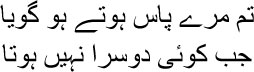

35
What do I do, the heart is helpless
The ground is hard, the sky distant
ome people come into your life for a few days and leave it bereft when they go. The heart turns into a Karbala. Arif left me a pauper when he went away. For the first time, I realized how love for one’s child is hidden deep within, just like many other instincts. A vital part of your life will be in perpetual darkness if you have not experienced love for your child. Arif was the flame of the candle that lit up my home, Manto bhai.
Arif was Umrao Begum’s sister’s son; his full name was Zainul Abedin Khan. Arif was his pseudonym. Along with his friend Ghulam Husain Khan Mahav, he visited me every day. They had a string of questions for me about ghazals. Arif had an extraordinary imagination. I felt that he was the only one worthy of being my son. I didn’t enjoy going to mushairas. Those two young men would force me to go. ‘Why don’t you like mushairas, Mirza sahib?’ Arif would ask now and then.
— I do not belong to the social circles of poetry, Arif.
— Why do you think of yourself this way?
— I have always found beauty on the wayside. These public recitals suffocate me. I have always wanted to sit by the road, but I was evicted even from there.
— Why, Mirza sahib?
— Is there anyone who isn’t afraid of a mad man? As you write ghazals, you will realize one day that to get to the heart of a word you have to take to the road like a fakir. No one will accompany you. Your nearest and dearest will spit on you. And on that day you will understand what the word conversation … guftagu … means. What an exchange between lovers means. And that an infinite number of sunsets and sunrises are concealed in this word.
— Shall I succeed in writing poetry someday, Mirza sahib?
— If the lord wills it, you shall.
I would grow anxious if I didn’t see Arif every day, Manto bhai. So I told him one day, why don’t you stay in my house. He was ready at once. His heart was like the sky. He moved into my house with his wife and two children. Umrao Begum was beside herself with joy. Her child, daughter-in-law and grandchildren were at home. We had spent lonely lives for far too long, Manto bhai. They painted our house with colours, Manto bhai. The chirping of the two children made it seem as though the garden had come indoors. The birds sang. I began to smell the fragrance of the flowers. Why live if life isn’t a celebration? My income was not enough for the upkeep of such a large family, but even the joy of struggle while living together was exceptional. I could make out how happy Umrao was; I did not want to rob her of this happiness. Even more important, I considered Arif my own son. When I wrote his name, my fingers seemed to dance joyously with pen on paper.
Arif was not well at all. He would fall ill quite often with a cough and fever. Eventually he could no longer get out of bed. The doctor examined him and diagnosed his illness as Rooh-af. He began to bleed through the mouth constantly. We assumed his days were numbered. Meanwhile his wife was suffering from the same illness. She died before Arif, who lived for about four months more. I couldn’t bear to look at him, Manto bhai. He was reduced to skin and bones. Umrao Begum was at his bedside all the time, praying to the lord. One day she began to cry like a baby, clinging to my hand. ‘Why does everyone who becomes important in my life always have to die, Mirza sahib?’ There can be no answer to such questions. Only the lord knows what games he will play with us shadow puppets. Arif died, leaving behind two little children. Bakir was five then, and Husain, two.
All the lights in my house went out. I would just sit by myself in my tiny room, without the inclination to go anywhere. But I had to visit the royal court. I was the emperor’s servant, you see. One day Arif’s death bloomed into a ghazal, Manto bhai. It is death we write, after all. Maybe composing death this way can take us along the path to eternity. I am not talking of immortality, Manto sahib; this progress towards eternity through writing death and wiping oneself out in the process is not for immortality. I never imagined that my name would remain alive in this world, that even a thousand years later people would read my ghazals. I only hoped that we could become the same dust from which Allah had made us—this would be my route to eternity.
Arif, my son, I called to him and said:

Our paths, will merge some day, Arif my son.
You left alone, you must remain alone a while longer.
My forehead will be bloodied from striking your tombstone,
Arif, but still I will stay by your grave till that day arrives.
You came but yesterday, and you’re talking of leaving
already? I know you won’t stay forever, but at least
stay a little longer.
You said when leaving, we’ll meet on Judgement Day.
But your going away is my Judgement Day, Arif.
Arif was just a young man, o ancient sky.
How would it have hurt you if he had lived a little longer? You were the full moon of my house, Arif.
Could the pattern not have remained a few days more?
Fools ask why Ghalib is still alive. My destiny has decreed
that I must hope for death for some time more.
Yes, Manto bhai, I had to bear witness to it all; I had to carry all the wounds on my body. The lord did not permit me to take the path of the wandering fakir—all my prayers were ruled invalid. Only, now and then, my heart overflowed when I looked at my creations. This was my limited access to the lord. I realized a long time after I wrote the ghazal for Arif that there had never been another Urdu ghazal like this one. Do you know why? My contemporaries like Anis and Davir had written several long elegies. But the subject of those marsias was Karbala—the martyrdom of Husain and his family. No one could imagine composing an elegy on anything other than Karbala. Now, for the first time, the notes of a marsia were heard in the ghazal for Arif. I had not planned this, it just happened. And as for Karbala—should we not compose elegies to our dearest people?
But we had no time to be immersed in grief for Arif. He had died, leaving Bakir and Husain as orphans. These two living creatures had to be protected. Arif’s mother took Bakir to live with her, while we adopted Husain. Such a small boy, but he stared at our faces all the time; I could tell he wanted to know about his father and mother. A son of dead parents, he fell ill every now and then. Umrao would stay up all night at his bedside. I knew that she was afraid that Husain might leave us too. Arif’s mother died before a year had passed, so we brought Bakir home too. How could we have abandoned him? But my house became lively again with the laughter and conversation of two children.
Meanwhile we had moved from Kale sahib’s haveli to the neighbourhood of Ballimaran. In 1854 a bit of money came my way. My annual income was now two thousand, two hundred and fifty rupees. Seven hundred and fifty rupees came from the pension, two hundred from the emperor, and four hundred from the emperor’s heir Mirza Fakhruddin, who had acknowledged me as his ustad. Nawab Wajid Ali Shah of Awadh had given me an annual grant of five hundred rupees for a qaseeda I had written for him. The emperor’s ustad Zauq sahib died at the end of that year. The poet Momin Khan was not alive anymore either. Listen to this sher of his, my brothers:

It seems you are by my side
When no one else is
Superb! When I heard it I told Momin Khan, ‘Give me this one sher, mian, and take my entire diwan in exchange.’
The emperor had no choice but to swallow the bitter pill. He welcomed me with the title of Poet to the Nation, Shairul-Mulk. I knew I would not get the title of King of Poets that was bestowed on Zauq sahib. I wasn’t bothered about it either. However, the emperor did not increase my emoluments. But as his ustad I was supposed to correct his ghazals too. I never cared for this task. How can poetry be corrected? What has been written is either poetry, or it is not. An ass cannot be corrected and converted into a stallion. But still, it was a question of livelihood. One day, I was chatting with Nazir Husain Mirza in the Diwan-e-Aam. Nazir sahib was the emperor’s minister. A guard arrived to say that the emperor wanted to see his ghazals. ‘Go get my bundle from the palanquin,’ I instructed Kallu. The bundle arrived, and I extracted eight or nine sheets of paper from it, each covered with a half-written sher of the emperor’s. I completed each of them and sent them with the guard.
‘So quick?’ Nazir sahib asked.
— This is easy enough. The emperor will be delighted.
Correcting verses or writing introductions to books were tasks I despised, Manto bhai. Was all this meant to be a poet’s work? Let those who have botched everything else do all this. I had a pupil named Hargopal Tafta, who was a friend as well. He lived in Secunderabad. I had to correct countless Farsi poems of his. I even wrote the introduction to a collection of his poetry. Tafta was very angry when he read it; he felt that under the guise of praise, I had mocked his verses. What could I say? ‘You are neither my enemy, nor my competitor,’ I wrote to him. ‘You are my friend and you consider yourself my pupil. How could I mock you under the guise of praise? Is that how low you think I am?’ Sometime later, Tafta became intent on publishing another collection. A request came to me to write the introduction. This time I really was annoyed. I wrote to him directly, ‘You may be able to write a collection of poems easily enough, but I cannot write an introduction as easily. If you love poetry, just keep writing, don’t be in a hurry to publish. Be patient. Or else you will prepare to publish the third collection as soon as the second one comes out. I will not be able to write so many introductions. I cannot change my ways at this age. Must I write an introduction every year if you publish a collection every year? I’m not going to write such rubbish anymore.’ Tafta didn’t write to me for a long time after this. What did these people think, Manto bhai? Just like verse, writing prose is difficult too. At his age, I wouldn’t have dreamt of compromising with anyone. Syed Ahmed had requested me to write a preface to Abul Fazl’s Ain-e-Akbari, which he was editing. We were very close friends. He was an eminent philosopher and leader. But I felt that the Ain-e-Akbari was not topical in the new age. Moreover, I did not care for Abul Fazl’s prose. Most important, I had no interest whatsoever in history. So, I wrote a poem instead as a preface and sent it to him. Syed sahib didn’t approve of it. He didn’t publish the poem either. What could I do about it? It wasn’t in my nature to praise someone’s work just out of friendship. So I became isolated slowly, which I accepted. What novelty could I expect from life anymore?
Kallu got hold of a dastango one day and brought him to me. He used to be on the prowl for storytellers like a tiger. Kallu and I settled down for a story. He told us a heavenly tale from Maula Rumi’s masnavi. Listen closely, my brothers.
I’m talking of the time of Omar, the second khalifa. A singer named Taslim lived in Medina. Not just singing, he was also an expert at playing the rabab. People used to say that his singing shamed even the nightingale, that the dead used to sit up in their graves when he sang. He was friendly with people from all strata of society. Taslim would be followed by a large crowd wherever he went; they behaved as though there was no one but Taslim in their lives.
But as Taslim grew old, his voice lost its magic; his fingers lost the power to make melody. It came to a point where he reminded the people of Medina of a braying ass when he sang. When Taslim turned seventy, he had no more listeners for his songs or his rabab. Since he had expected his popularity to remain undiminished all his life, he had thrown away all his money on a good life. In old age he was weighed down with debt. His landlord evicted him. He could not even afford to buy himself a meal. Worst of all, he was forced to wander about on the streets with his rabab, whose strings were broken. All alone now, he talked to himself constantly. Most merciful Allah, why should I have suffered such agony? People used to consider him the musician to the lord at one time. And had the lord forgotten him now? Was there no justice in this world?
No one spared him a glance on the road. One or two people would hurry past with a ‘Salaam Aleikum’. The people of Medina were thronging to listen to other performers. Taslim looked a broken man as he walked down the road. Thus it was that he arrived one day at a graveyard outside Medina. Weary and famished, he sat down on a gravestone. What was the meaning of such a life? Were all the honours he had received false? The fame of his youth was a bitter memory now. He would not be able to sing or play the rabab anymore. This was living hell. Taslim wondered whether pride in his own talent was his sin. Was he being punished for his attachment to fame? The graves around him told him the same thing—only death is true. Taslim decided to pray to the lord before death. He had never thought of Allah specifically before. Now he lay down on a grave, sensing that beneath him lay the cold bones of a man or a woman—only a framework of bones. His silent words mingled with his tears—‘You have snatched my music away, Allah. Music was my breath, my livelihood. How will I survive without music? You gave this unworthy man a great deal, and then you took it all away. I have no complaints. Whatever you gave or took away was all yours. Just let me prove capable of bearing this pain. I stand at your door naked today. Take me in, O Lord. If I live a little longer, I will sing only for you, I will play the rabab for you alone. At least let me get enough money to buy some strings for this instrument. You pardon even those who forget you. Pardon me too, Lord.’
As he spoke, Taslim’s life left his body and flew to the eternal garden where it is always spring. His soul was immersed in an ocean of nectar. He had no desire to return to earth. In this new world there was no fame or reputation or ambition. Can there be a happier place, wondered Taslim’s soul. At that moment he heard the voice, my brothers, the original sound, of which all other sounds are mere echoes. The voice said, ‘Do not put down roots here. This is merely a different experience for you. Leave now.’
— Where? Must I return to earth? Have pity on me, I shan’t return.
At that precise moment on earth, Khalifa Omar was feeling drowsy on his throne. Soon he fell asleep. In his dream he heard the same original voice say, ‘A favourite of mine is asleep in the graveyard outside Medina. Give him seven hundred dinars from the treasury and tell him to buy strings for his rabab.’
As soon as he awoke, Khalifa Omar hurried to the graveyard with seven hundred dinars. As he wandered around the graves, he came across a very old man who had lain down on one of the tombstones. The khalifa continued searching. Eventually he began to wonder, I walked past the old man because of his appearance, but he might well be the lord’s favourite. Omar went up to him, and, after observing him closely for some time, recognized Taslim.
Taslim’s soul was still whirling about in the otherworld. Suddenly a sneeze was heard. Khalifa Omar had sneezed, which Taslim’s soul interpreted as a significant message. Everything in the lord’s world was bound by rules. Taslim’s soul re-entered his body, whereupon he sat up immediately. Seeing the khalifa, Taslim grasped his feet. —Don’t imprison me for my debt, huzoor. Let me off this time.
— Don’t be afraid, mian. Here are seven hundred dinars. Spend it as you will. But do buy strings for your rabab.
Stretching his hand out to accept the coins, Taslim gazed at them for a while. Then, returning them to Omar, he struck his rabab against the grave, smashing it to pieces, and began to tear off his clothes.
— What are you doing? You’re a favourite of the lord’s. He sent me himself.
— I am not worthy of this, khalifa sahib. I have grown distant from the lord because of this rabab. I could not see his beauty because of my voice. My ambition did not let me get near him. While I was busy seeking fame, his caravan went far away. My sin, my pride, cannot be wiped off in any circumstances, khalifa sahib.
— All these things that you’re saying are also expressions of your pride, mian. Repentance will worsen your sins.
— But it was this rabab that kept me from him.
— It was he who put the rabab in your hands. Do you suppose you’d have had it otherwise? He sent me so that you can buy strings for your rabab. Allah sings through your voice.
Accepting the money from the khalifa, Taslim offered his respects. Then he went off to the market to buy a new rabab. No one ever saw Taslim after this. Playing his new rabab, he set off towards a silence that cannot be touched by the sound of any story on earth.